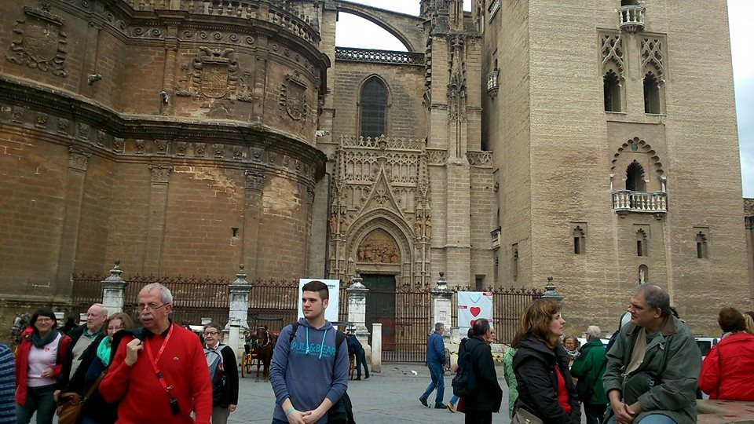

JAVIER GONZÁLEZ HERNÁNDEZ

|
Me llamo Javi González, soy estudiante de Administración de Sistemas Informáticos en Red, antes estudiaba un grado en Químicas, pero por temas económicos y personales tuve que dejar la carrera a medias, me gustaría acabarla, aunque hoy en día no es mi mayor prioridad. |
|
|---|
AFICIONES
|
Podría decirse que el mundo de los videojuegos ha sido siempre como una vía de escape de una realidad que no quería vivir a un mundo ficticio en el que yo tenía el control de todo lo que pasaba. Por eso tengo los videojuegos como una de mis principales aficiones. *Este es un vídeo en el que colaboré en el World Of Warcraft hace 9 años* |
|---|
|
Pero no todo son videojuegos en mi vida, lo cierto es que podría decirse que aparte de evadirme de la realidad, también me aferro a ella. ¿De qué manera? Con la música, otra de mis pasiones, una de mis vocaciones que no he llegado a cumplir junto con los videojuegos. Desde que soy pequeño quería organizar eventos de cantantes de gran prestigio, sobretodo del mundo del rock, tanto nacional como internacional *Una de mis canciones favoritas* |
|---|
|
A partir de aquí, mis aficiones cada vez pierden mas prioridad, pues las principales son esas dos, las que me definen, las que cada día están presentes  *Sevilla* |
|---|
|
Esta igual no es una afición, pero es una cosa que me encanta; estoy afiliado a PACMA, un partido polítco animalista, no por el sentido político, pues les queda mucho que aprender, sino por su interés en la lucha por el derecho animal y medioambiental. Al igual que también soy donante, no de mucho, más bien con lo que puedo, de asociaciones animalistas como son SVPAP. *La imagen abre un enlace a la página web* |
|---|
Volver al inicio
ESTUDIOS
Volver al inicio
Currículum Vitae
Volver al inicio
Club de Fans Oficial
Para formar parte del Club de Fans Oficial de Javi González tienes que rellenar el siguiente formulario

*Esto me hace aprobar seguro* |
Volver al inicio